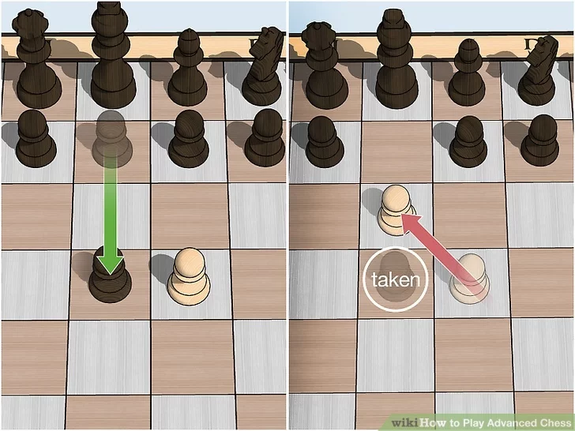
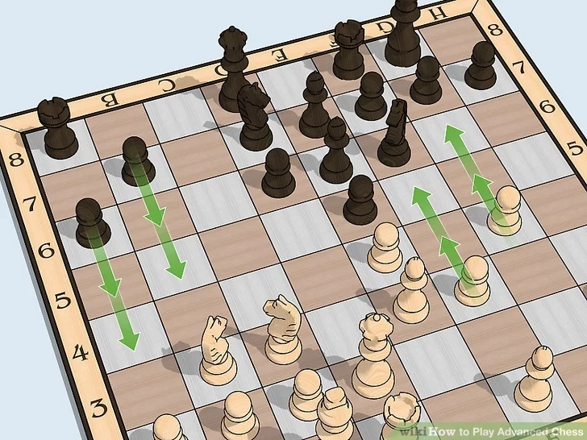
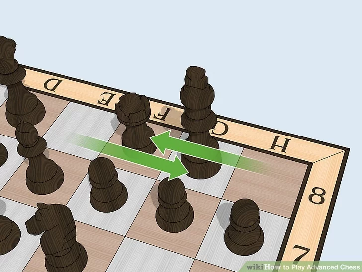
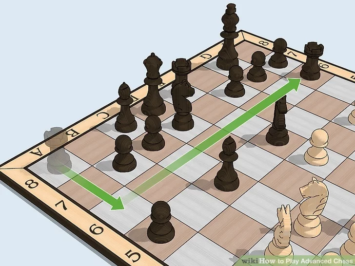
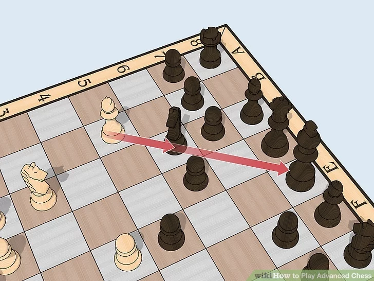
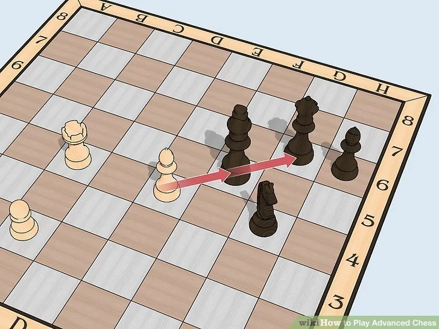
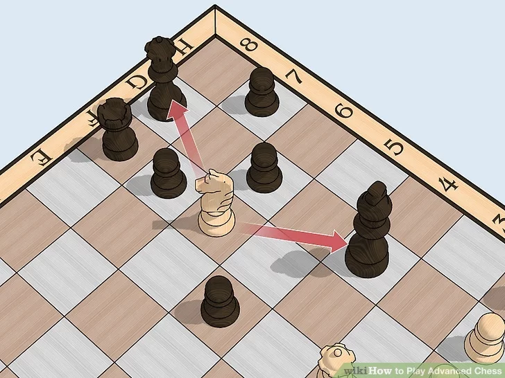
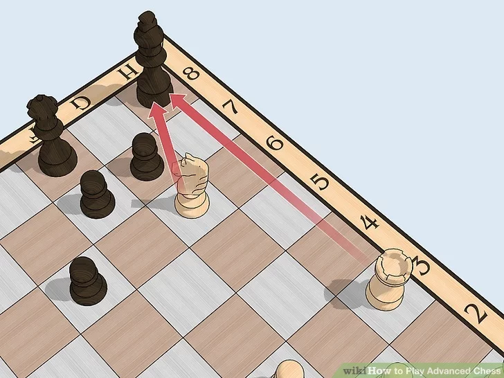

The En Pessant

On the first move, pawns can move 2 spaces forward. En Passant is when your pawn is on the fourth space away from its original square. An opponents pawn moves 2 spaces forward, next to your pawn. Oh No! Your entire strategy has been upset. That is what you might think, but En Passant allows you to take the opposing pawn next to yours as though it had moved only one square. Your pawn moves to where the opposing pawn would have been if it had moved only one space forward. Be aware that this move is not always useful and may lead to problems, so don't just do it because you know how. It's the same with all moves: you must carefully assess the situation before moving.
The Pawn Storm

A pawn storm is useful when you and your opponent have castled to opposite sides of the board. Unless the center is locked or static, a pawn storm will merely weaken your king. Use the pawns parallel to you opponent's king to charge in and weaken the king. Again, as with all moves, don't just charge in. There is no reason to lose 3 or 4 pawns when you could avoid losing even one. Support the storm with your other pieces, make your opponent pay dearly for each piece. Used correctly, a pawn storm is a deadly weapon, however, make sure that you are ahead of your opponent's pawn storm!
Castling

Castling is a defensive move where a King may move two spaces to the side and a Rook may hop over the King. To do this, there must be no pieces in between the Rook and the King. The Rook may not move more than one space past the King. Also, this can only be done if both pieces have yet to move. The move may not be made to get out of check nor if the king would be moving through or into a threatened square (out of, through, or into check).
Lifting a Rook

Lifting a rook is not so much a strategy as a fancy name for a move. Lifting a rook simply means that you bring your rook off of the back rank by first going up, and then to either side.
The Pin

A "Pin" is an incredibly powerful tactic that, when used correctly, can end a game instantly. Pinning a piece is when your piece attacks 2 pieces of equal or greater value. The term pinning the bishop to the king means that the bishop cannot move, or the king will be under attack. This is called an absolute pin, where moving the bishop is an illegal move, as it places the king in check. Another kind of pin is the familial pin. Instead of the king being behind the bishop, there may be a queen or a rook. In this case, the bishop can move, but it is only in rare cases a good idea, as it lays the more valuable piece behind it under attack.
The Skewer

A skewer is similar to a pin, but instead of the bishop being in front of the king, the king is in front of the bishop. A skewer is when you put the king in check, forcing it to move, and forcing it to expose the bishop.
The Fork

A fork is when one of your pieces (or pawns) attacks 2 of your opponents pieces. (Note, a pawn is not considered a piece.) An example of a fork is if a knight attacks both the opposing king and queen at the same time. Unless the knight can be taken, the king is forced to move, as it is in check, and the queen can be taken, at little to no expense.
The Double Check

These are a more dangerous form of discovered check. The difference being that the piece behind it is able to attack the enemy king while the moving piece is able to attack as well. These will force the king to move because capturing or blocking one piece doesn't work since the other piece will be able to attack no matter what; a king cannot place its self into checkmate.